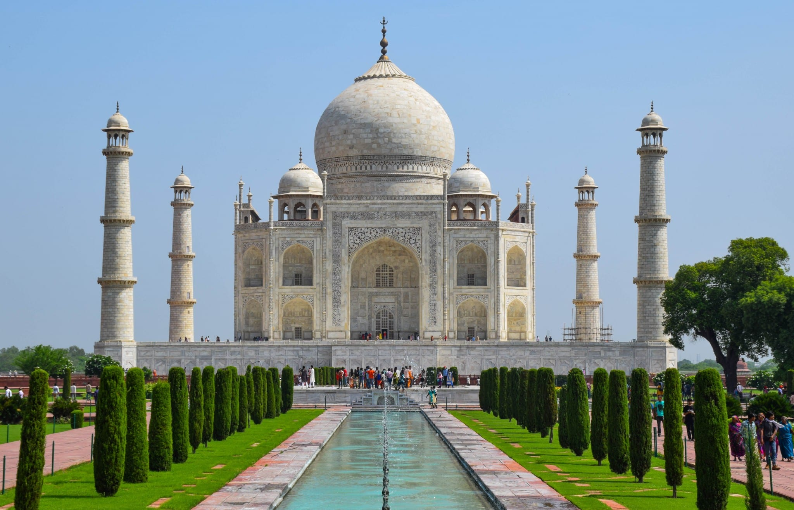

Kína a legtöbb országgal közös határokkal rendelkezik.
Kína 14 országgal határos, így jelentős szereplője Ázsia földrajzi és politikai tájképének.
Ezek a határok változatos környezetet ölelnek fel, a száraz régióktól a buja hegyvidéki területekig, tükrözve Kína változatos domborzatát.
India 22 hivatalos nyelvet ismer el.
India többnyelvűsége kiemeli kulturális összetettségét és történelmét, mivel az egyes nyelvek különböző hagyományokat képviselnek.
Ez a nyelvi sokszínűség India identitásának egyik sarokköve, amely bemutatja az ország közösségek és szokások gazdag szövevényét.

Japánban a legnagyobb az automaták sűrűsége.
Az automaták mindenütt jelen vannak a japán életben, és az elérhető termékek széles választékáról ismertek.
Ez a jelenség tükrözi Japánban a kényelem és a technológia kulturális hangsúlyozását, és a mindennapi szükségletektől kezdve az egyedi cikkekig mindent kínál.
Bhután prioritásként kezeli a bruttó nemzeti boldogságot.
Bhután egyedülálló abban, hogy sikerét a hagyományos gazdasági mérőszámok helyett a bruttó nemzeti boldogságon keresztül méri.
Ez a megközelítés a polgárok jólétét és boldogságát hangsúlyozza, integrálva a társadalmi, kulturális és környezeti jólétet.